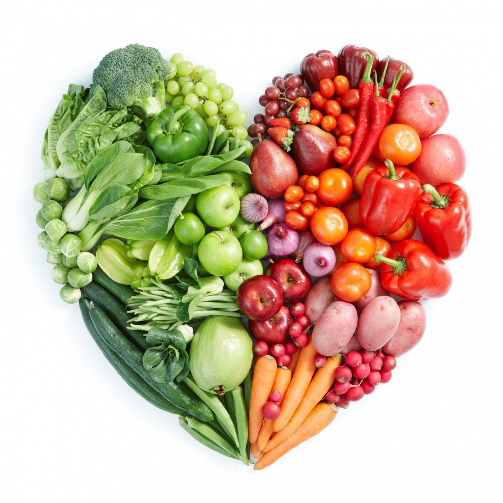
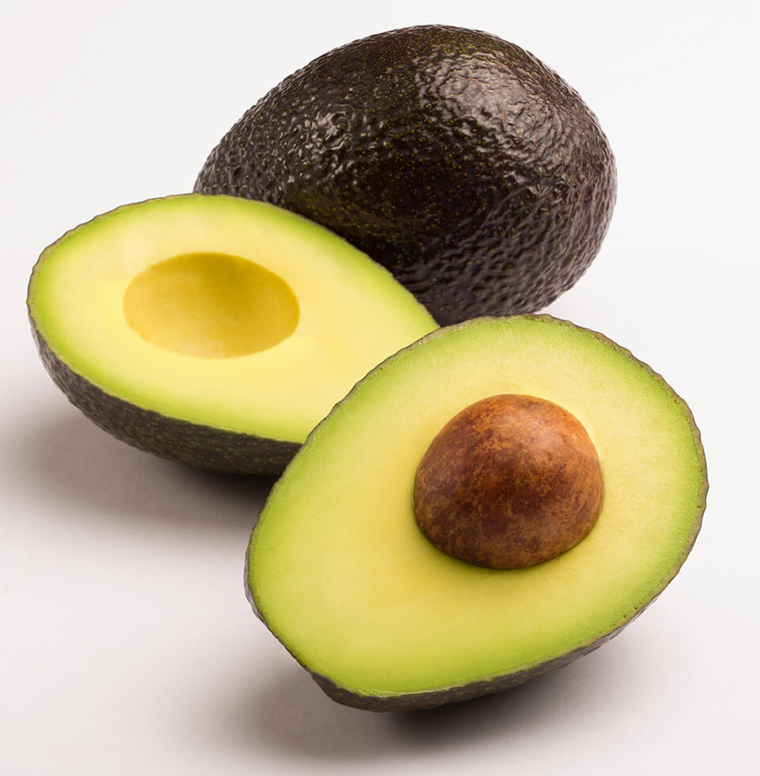
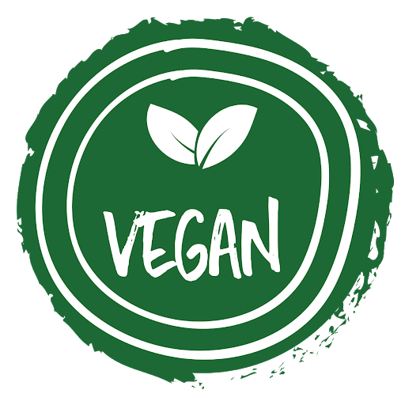

Автор - Селин Е.Б. Опубликовано 10.02.2016
Идея здорового образа жизни – одна из самых популярных идей нашего века. Мы сегодня делаем очень много для того, чтобы быть здоровыми, энергичными и хорошо выглядеть. Возникла целая индустрия, чтобы удовлетворить эти наши желания, но важнее, чем правильное питание, пожалуй, не может быть ничего! В отношении правил питания существует множество распространенных заблуждений. Эти стереотипы настолько сильны, что, сами того не подозревая, каждый день мы наносим серьезный вред своему здоровью, бессознательно следуя им. Пришло время развеять мифы о питании!Читать далее
Автор - Health&Life. Опубликовано 20.06.2018
Экзотическая «аллигаторова груша», «Персея американская» или авокадо – плод вечнозеленого дерева семейства Лавровые. Родиной этого вечнозеленого дерева является Мексика. На планете произрастает более 400 видов авокадо, а благодаря уникальным свойствам он был занесен в Книгу рекордов Гиннеса как самый питательный плод в мире. Почему полезные свойства авокадо так ценны и кому вредно употреблять «аллигаторову грушу»?Читать далее
Автор - Big Sister. Опубликовано 13.08.2015
Расскажу немного о веганстве и своем пути к нему.Читать далее